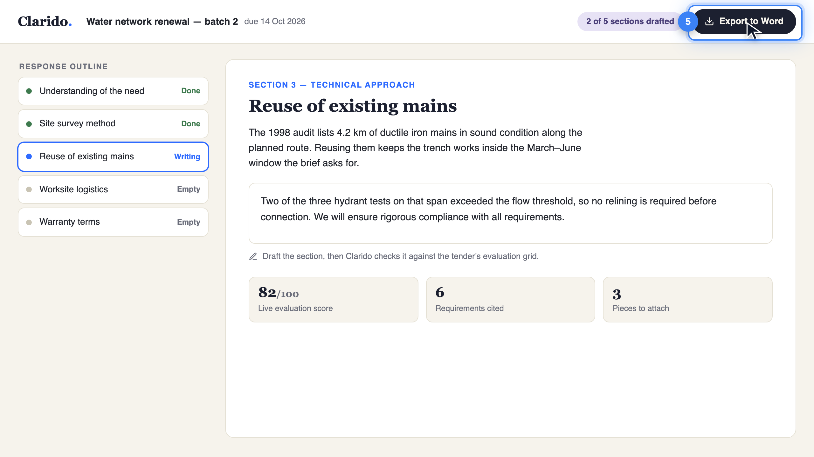
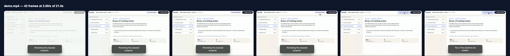

Product demos as code, built for your coding agent. One instruction, create a product demo of my site, and Claude Code, Codex or Antigravity writes two text files in your repo and compiles them into video, guide, reel and tour, in every locale, auditing its own work. You review the diff and tweak details; the demo regenerates whenever the UI changes.
Create a product demo of my site. Use the CLI to generate everything.
The agent finds its manual (AGENTS.md) in the repo and runs everything locally: nothing to sign up for, no key to paste. Prefer to drive? The commands are below.
One timeline, website/src/reel/anim.config.json in this repo, compiled by npx tsx cli.ts export to the MP4 above, a WebM, a poster and a GIF in one pass.
The manual an agent needs ships in the repo as AGENTS.md, written for LLMs rather than adapted for them, and every command speaks plain text, JSON and PNGs. Point Claude Code, Codex or Antigravity at the project and ask.
Create a product demo of my site. Use the CLI to generate everything.
$ npx tsx cli.ts init-config demo $ npx tsx cli.ts check demo # probes every target $ npx tsx cli.ts preview demo # reads the frames $ npx tsx cli.ts export demo -o demo.mp4 --guide $ npx tsx cli.ts verify demo # build + audit OK demo.mp4 · demo.vtt · guide/ · verify.json
No API key, no metering: the LLM is yours, the CLI is local. The agent writes the screen
and the timeline like any other code, checks its own work with check --json and
verify.json, and fixes a badly aimed zoom like a lint finding. Your part is the
part humans are good at: read the diff, tweak a time or a selector, approve.
A screen and a timeline: that is the whole source format. The compiler does the cursor, the spotlight, the camera, the subtitles, the guides and the locales.
index.html is the UI, anim.config.json is the choreography: clicks, typing, highlights, camera pushes, each with an explicit time. Your agent writes both and iterates on its own findings; you tweak a time or a selector like any other code change. Reviewable in a pull request, draftable from a real flow with record --learn. This timeline is real repo content:
{ "meta": { "title":
"Draft a proposal response" },
"steps": [
{ "id": "progress",
"time": "2.2s",
"action": "highlight",
"target": ".section-count",
"title": "Check what is left" },
{ "id": "draft", "time": "6.4s",
"action": "type",
"target": "#editor-type-target",
"value": "We will ensure
rigorous compliance…" },
{ "id": "zoom", "time": "9.6s",
"action": "camera",
"target": "#text-editor",
"scale": 1.18 } ] }
check replays the timeline in a headless browser and probes every target right before its step (missing, hidden, 0×0, clipped, off-screen), then reports each camera push's framing as facts. A coding agent fixes a badly aimed zoom like any other lint finding. Real output from this repo:
$ npx tsx cli.ts check demo · step 5 (6.4s type): target is 0x0 (empty caret); the spotlight uses its sized ancestor #text-editor · step 6 (9.6s camera): scale 1.18 · window 1627x915 · target 100% visible OK 9 steps · 0 errors · 1 warning · 3 info
One command records the video with subtitles and chapters and captures the step guide. Same timeline, other commands: a tour site, a looping reel, a French build. The frame below is a captured guide step, untouched:
$ npx tsx cli.ts export . -o demo.mp4 --guide $ npx tsx cli.ts build . --embed $ npx tsx cli.ts tour $ npx tsx cli.ts localize . fr $ npx tsx cli.ts build-all --changed-only --diff # every command prints what it wrote

Motion is auditable as text and images. The whole review surface (target probes, camera framing, overlay geometry, frame diffs) is JSON and PNGs a coding agent, or a tired human, can read without pressing play.

Four content types from one source (demo videos, step-by-step guide sites, looping marketing reels and interactive tours), plus localization and CI-ready rebuilds (build-all --changed-only re-renders only what a change touched, in any CI you point at it). Every one a first-class compiler target, not a plugin, not an export hack, all in the free CLI.
MP4 with .vtt subtitles, chapter markers for every titled step, and optional narration synthesized with macOS say or OpenAI TTS and mixed in at each step's time.
Scribe-style guides as guide.json, .md and .html with numbered, spotlighted step frames and crops. Publishing a guide is copying a folder.
Silent looping product clips: MP4, WebM, poster and GIF in one export, plus a self-contained embed page that plays when scrolled into view. One responsive screen ships desktop and phone reels from the same source, at 2× pixel density. This page's hero is one.
A self-contained tour site: a rail of scenarios and a canvas that plays them step by step, with play/pause and per-step seeking. Desktop and phone variants build from the same responsive mockup. Nothing is captured or encoded; it weighs what its HTML weighs.
The choreography is shared, so a French build is a strings file, not a re-shoot. Number and currency formats localize too ($2.4M becomes 2,4 M$), because a translated American product reads as one.
A content-hash build key per guide × locale. --changed-only rebuilds only what changed and --diff compares frames pixel by pixel, marking guides stale above the threshold.
Everything the agent writes is a small text artifact in your repository. The video is an output, never the source: review it in a pull request, rebuild it in CI, hand it to the next agent.
demo/ index.html the screen, authored once anim.config.json the timeline: actions, targets, times strings.en.json the base strings anim.manifest.json each build: content hash + build key locales/fr/ the French build, same choreography guide/ captured step frames + crops demo.mp4 + demo.vtt regenerated by export, never edited
No account, no credits, no watermark, no limits. Vistaro runs on your computer, driven by the agent you already use, and what it builds is yours: plain files you can commit, host or send.
Rendering happens on your laptop or in your CI. Nothing is uploaded anywhere, so a demo of a feature you haven't shipped stays with you.
Claude Code, Codex or Antigravity reads the manual in the repo and drives the CLI. There's no API key of ours to paste and no usage to pay for.
Videos, guides, reels and tours are ordinary files. Review them in a pull request, drop them in Slack, or host them on GitHub Pages, Netlify or your docs site.
We're considering an optional hosted service for what a laptop can't do: seeing how viewers move through a demo, collecting leads from it, a shared help center. The CLI stays free either way. If you'd use it, tell us what for.
check, build, preview, export, record, guide, tour, localize, build-all) runs locally and headless with no key and no secrets, which is why it runs in CI as-is. The only LLM-powered commands are optional conveniences: extract (screenshot → HTML via a vision model) and animate (prompt → timeline). A coding agent skips both and writes the timeline itself; this website's hero reel was made exactly that way.
build-all --changed-only skips any guide × locale whose key is unchanged and whose video still exists, so a CI run costs seconds when nothing moved. --diff keeps the previous step frames, compares them pixel by pixel and marks a guide stale above a threshold (default 2%), writing the diff images next to them. A UI change shows up as a diff report on the pull request, not as a stale video a customer finds first.
record runs the same timeline against a live URL: real navigations, waitFor gates, Playwright storage state for sign-in, and re-injection of the runtime after each navigation. Every target is probed before its step, and a reset hook (--reset-cmd) puts the app back into its starting state between passes, because a timeline that saves data is not idempotent. check --live --url … is the cheap half of that loop: it replays the timeline for real and probes every selector in seconds, so a typo costs seconds instead of a recording. And record --learn (experimental) turns the same recording into a draft anim.config.json, every observed click, keystroke and navigation re-resolved to the stablest selector the page offers, so your first timeline is written for you.
check/build/preview/export/tour/localize, every output type, batch build-all, no watermark, ISC-licensed. It built everything on this page. It costs us almost nothing to offer, because it runs on your machine with your agent. If we ever add a paid hosted service, it will be optional, and the CLI stays free.
npm install and Chromium through Playwright (npx playwright install chromium). Driving it yourself is the same three steps: Node 20.6+, npm install, the Chromium download. ffmpeg is bundled, nothing else to install, no API key. Narration uses OpenAI TTS when a key is present, otherwise macOS say, and is optional. The CI workflow in the repo needs no secrets at all.
record --learn (experimental) watches a recording of your flow and writes the draft timeline for you to clean up. If even that is too much, the GUI vendors are a better fit.
Tell your agent create a product demo of my site. The demo lands in your repo as code: every artifact compiled, every locale covered, rebuilt whenever the UI changes, free and local.